<!DOCTYPE html><html></html><head><title>Will Kent-Daggett</title><link rel="stylesheet" type="text/css" href="assets/build/style/style.min.css"><link rel="stylesheet" href="assets/build/bower/font-awesome/css/font-awesome.min.css"><meta name="author" content="Will Kent-Daggett"><meta name="description" content="Will Kent-Daggett is a web developer working in Los Angeles"><meta name="keywords" content="will kent-daggett, will kent daggett"></head><body><div class="container"><div id="header"><h1><a href="/">Will Kent-Daggett</a></h1><ul><span><i class="fa fa-envelope-o"></i></span><li><a href="mailto:hi@wtkd.info"><span>hi@wtkd.info</span></a></li><span><i class="fa fa-map-marker"></i></span><li><span>Los Angeles, CA</span></li><span><i class="fa fa-github"></i></span><li><a target="_blank" href="https:/github.com/wkentdag">@wkentdag</a></li></ul><p id="about">I'm a full-stack developer with over two years of experience crafting responsive websites, creating database schemas, and designing scalable APIs, both as a freelancer for independent clients and as part of a development team. I also have several years' experience mining large data sets to generate programmatic art and music. I believe that beautiful design is predicated by elegant code, and vice versa; I am looking for jobs (freelance or full-time) that allow me to work at that point of intersection.</p></div><div id="projects"><h1><a href="#projects">Projects &#8623; </a></h1><div class="project"><h2>WMCN.fm<span> <a href="http://wmcn.fm" target="_blank">&#10548;</a></span></h2><div class="images"><table class="images"><tr><td><a href="images/wmcn/landing.png" target="_blank">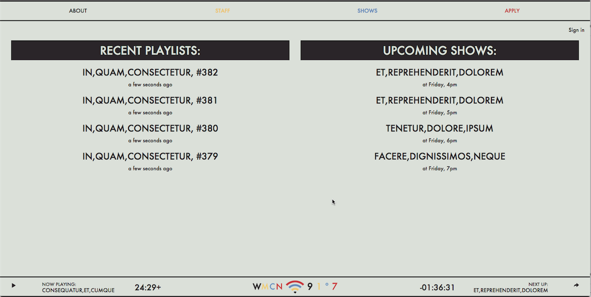</a></td><td><a href="images/wmcn/edit.png" target="_blank">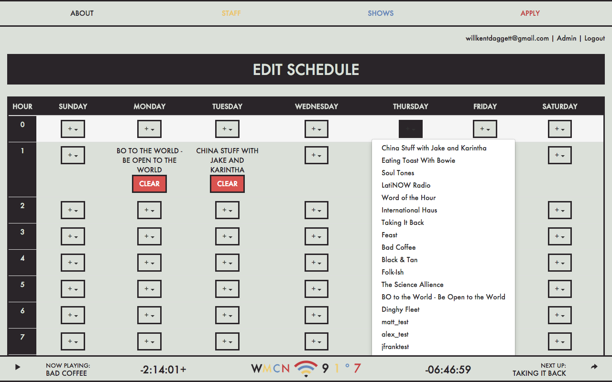</a></td><td><a href="images/wmcn/apps.png" target="_blank">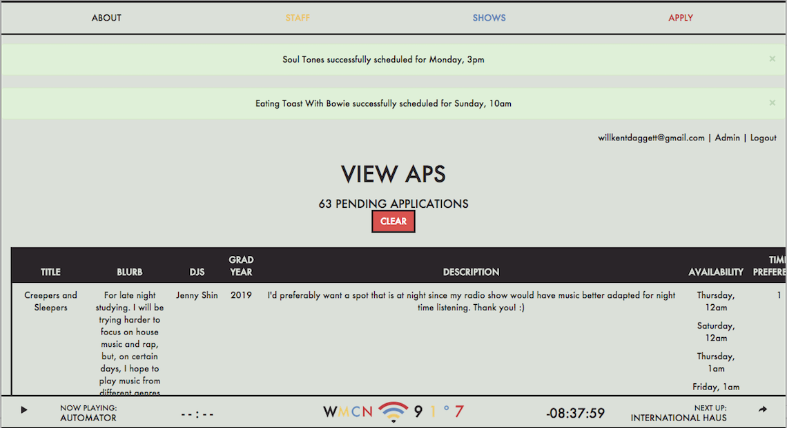</a></td><td><a href="images/wmcn/apply.png" target="_blank">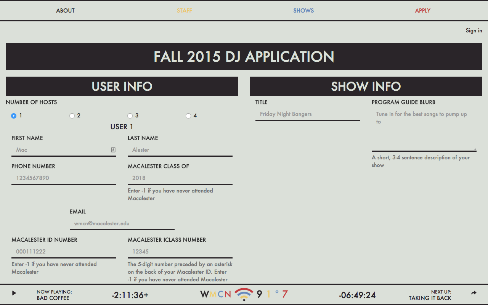</a></td><td><a href="images/wmcn/ios.png" target="_blank">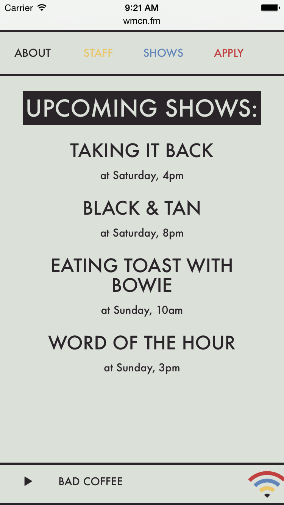</a></td><td><a href="images/wmcn/about.png" target="_blank">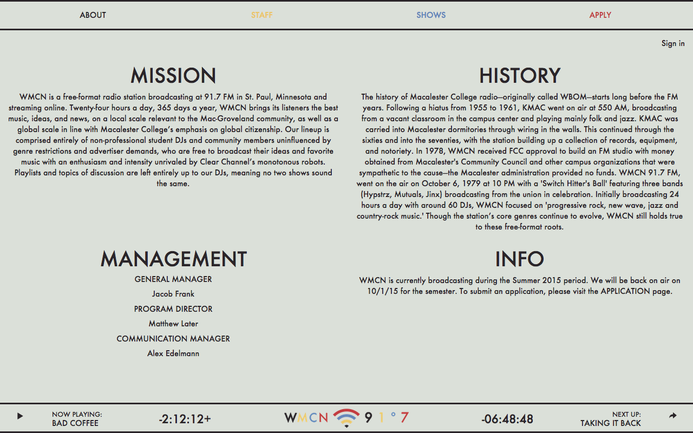</a></td><td><a href="images/wmcn/schedule.png" target="_blank">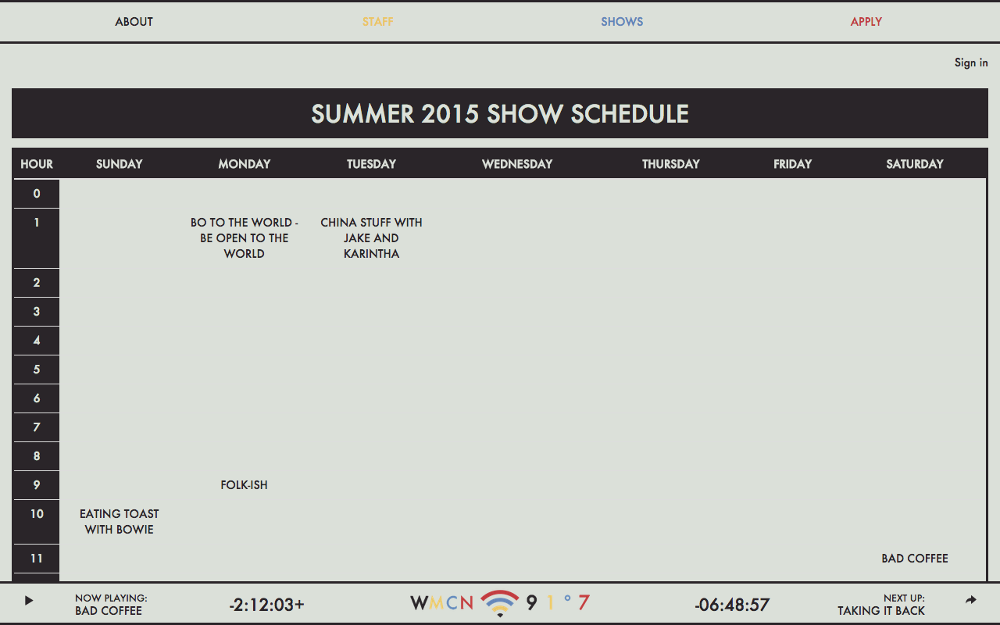</a></td></tr></table></div><p>Webapp for Macalester’s radio station. Allows visitors to listen worldwide, browse playlist archives and the current show schedule, and apply for a new show. Features an admin panel for approving show applications, scheduling shows, and managing user privileges. Also features a custom CMS for DJs to post show playlists. Built with Node.js and Express.<span> <a href="https://github.com/wmcn-fm/wmcn.fm" target="_blank">View on Github &#8620;</a></span></p></div><div class="project"><h2>WMCN API<span> <a href="http://api.wmcn.fm" target="_blank">&#10548;</a></span></h2><p>Standalone API layer for WMCN's PostgreSQL database. Built with Node.js and Express.<span> <a href="https://github.com/wmcn-fm/wmcn-api" target="_blank">View on Github &#8620;</a></span></p></div><div class="project"><h2>Will Matsuda<span> <a href="http://williammatsuda.com" target="_blank">&#10548;</a></span></h2><div class="images"><table class="images"><tr><td><a href="images/matsuda/1.png" target="_blank">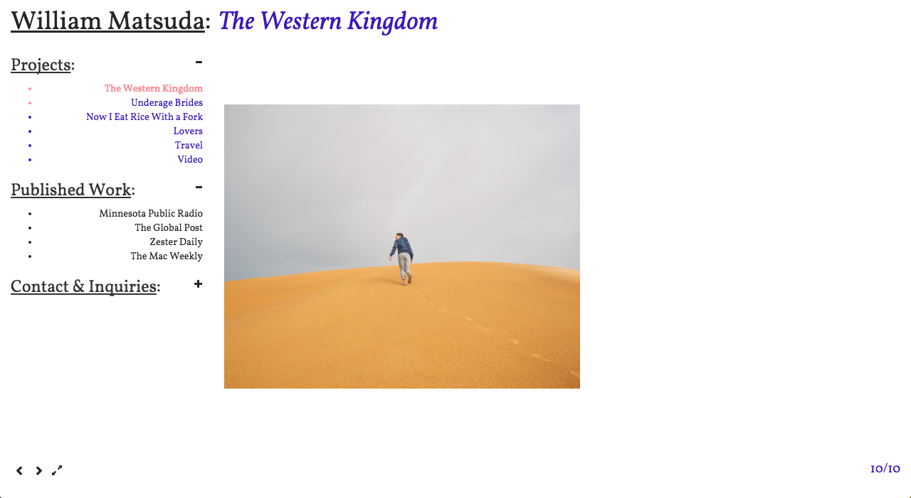</a></td><td><a href="images/matsuda/ios.png" target="_blank">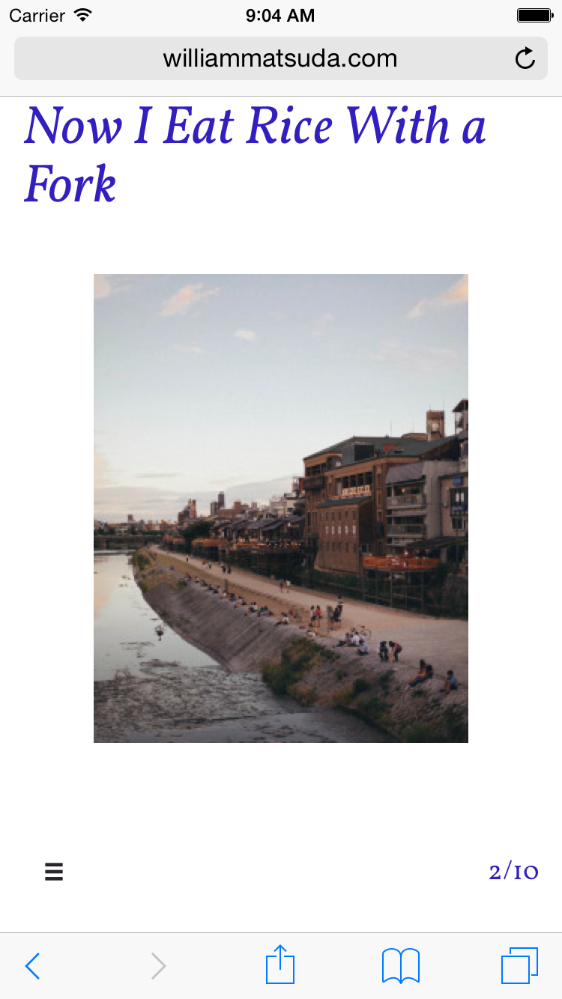</a></td><td><a href="images/matsuda/2.png" target="_blank">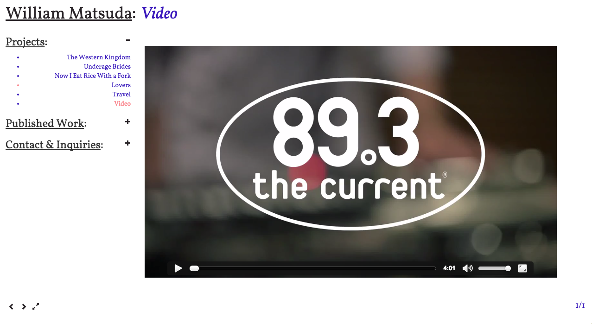</a></td></tr></table></div><p>Portfolio website that uses the Tumblr API to download and sort photos according to tags specified through a custom admin panel. Built with Node.js and Express.<span> <a href="https://github.com/wkentdag/matsuda" target="_blank">View on Github &#8620;</a></span></p></div><div class="project"><h2>Guilt Trip</h2><div class="images"><table class="images"><tr><td><a href="images/guilt-trip/landing.png" target="_blank">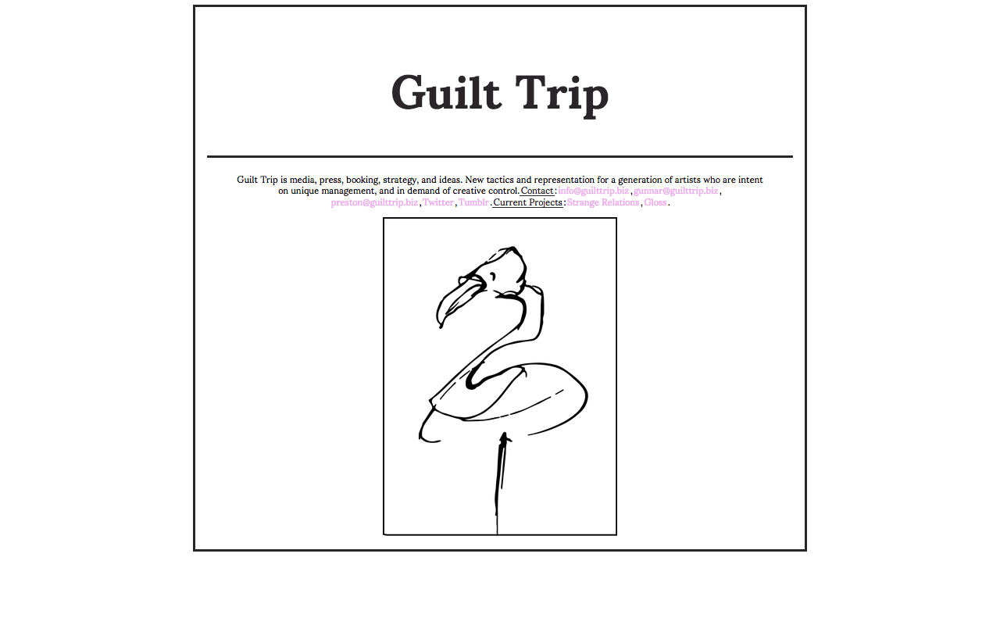</a></td><td><a href="images/guilt-trip/gloss.png" target="_blank">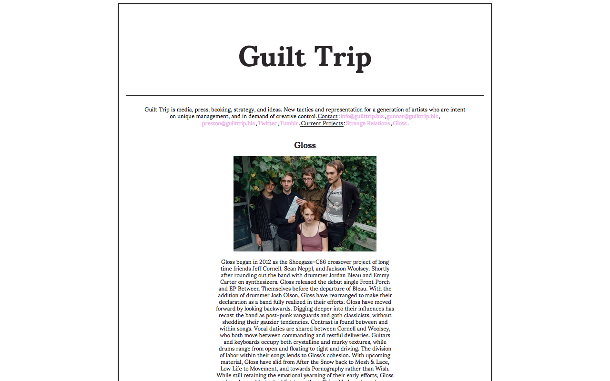</a></td></tr></table></div><p>Simple static website for Minneapolis-based booking and management company.<span> <a href="https://github.com/wkentdag/guilt-trip" target="_blank">View on Github &#8620;</a></span></p></div><div class="project"><h2>Timelaps</h2><div class="images"><table class="images"><tr><td><a href="images/timelaps/installation1.jpg" target="_blank">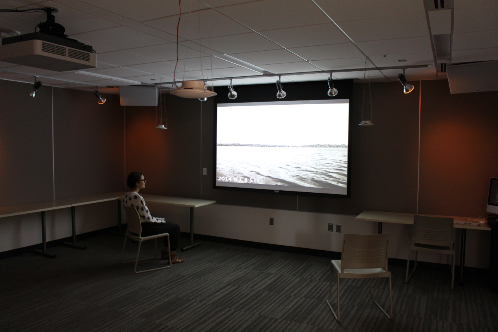</a></td><td><a href="images/timelaps/flier.jpg" target="_blank">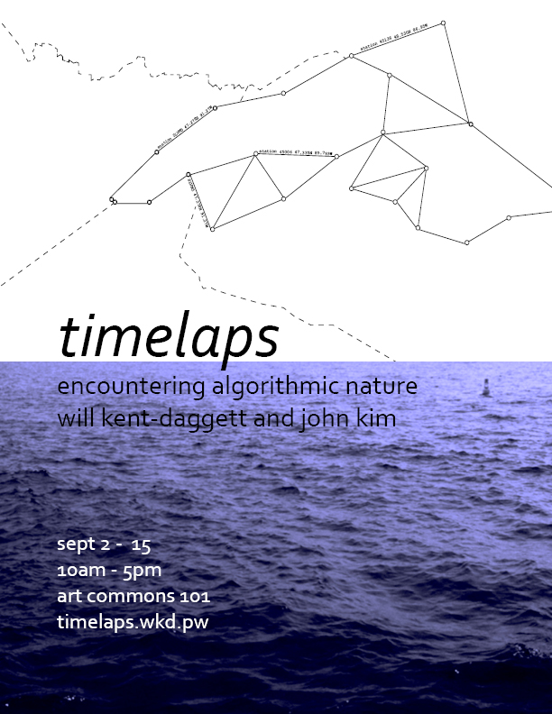</a></td><td><a href="images/timelaps/max.png" target="_blank">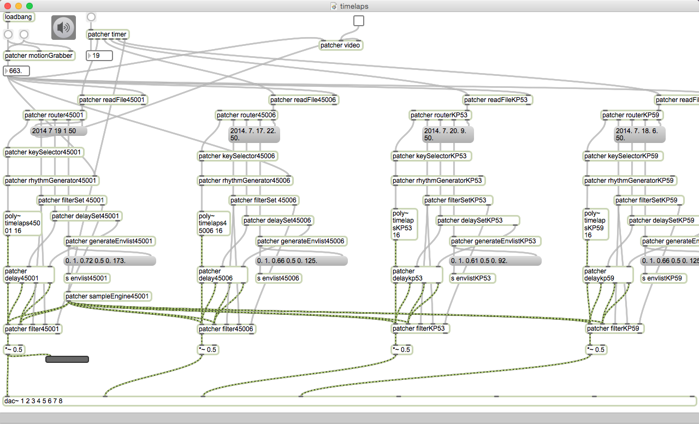</a></td><td><a href="images/timelaps/flier_back.jpg" target="_blank">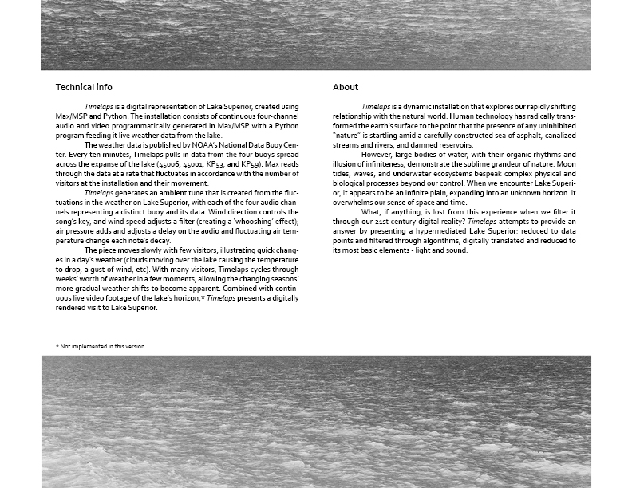</a></td><td><a href="images/timelaps/installation2.jpg" target="_blank">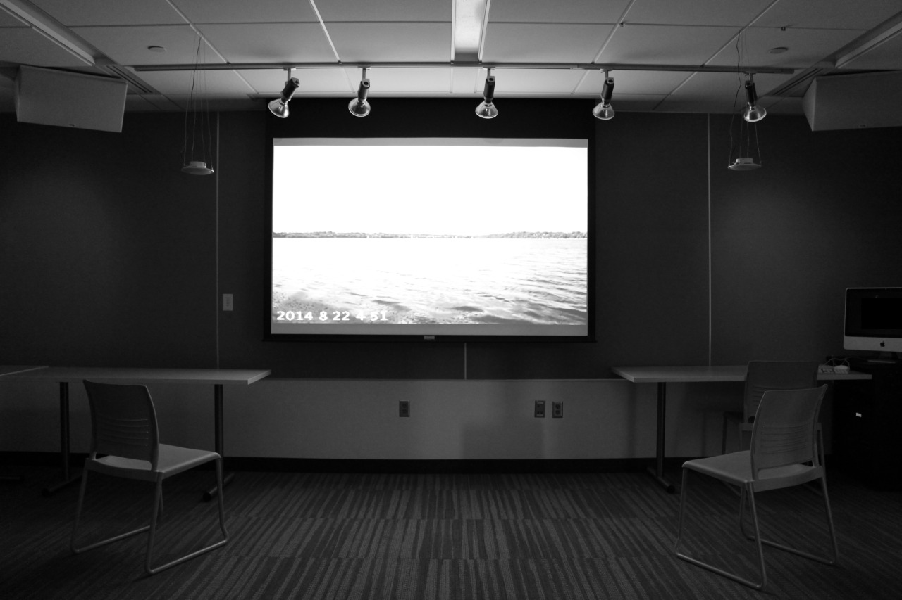</a></td></tr></table></div><p>Sound installation that represents current weather conditions at Lake Superior, MN as ambient music. Comprised of a Python application that mines realtime weather data and a Max/MSP program to sonify the data. Awarded a Wallace Summer Research Grant, Summer 2014. Exhibited at Macalester College, Fall 2014.<span> <a href="https://soundcloud.com/willkentdaggett/singlechannel-test-003" target="_blank">Audio sample on Soundcloud &#8620;</a></span><span> <a href="https://github.com/wkentdag/timelaps" target="_blank">View on Github &#8620;</a></span></p></div><div class="project"><h2>Sup</h2><p>Privacy- and simplicity-oriented social network that allows users to temporarily share their current location to a subset of followers. Comprised of an API webserver and separate iOS client. Built with Node.js, Express, and Objective-C. Developed during Software Design class at Macalester College, Spring 2014.<span> <a href="https://github.com/wkentdag/sup" target="_blank">View on Github &#8620;</a></span></p></div></div></div><script>(function(i,s,o,g,r,a,m){i['GoogleAnalyticsObject']=r;i[r]=i[r]||function(){
(i[r].q=i[r].q||[]).push(arguments)},i[r].l=1*new Date();a=s.createElement(o),
m=s.getElementsByTagName(o)[0];a.async=1;a.src=g;m.parentNode.insertBefore(a,m)
})(window,document,'script','//www.google-analytics.com/analytics.js','ga');

ga('create', 'UA-68141032-1', 'auto');
ga('send', 'pageview');</script></body>